library(tidyverse)
library(patchwork)
# BiocManager::install(c("SingleCellExperiment","SingleR","celldex"),ask=F)
library(viridis)
library(Seurat)
# Anotacion de tipos celulares
library(SingleCellExperiment)
library(SingleR)
library(celldex)
# Expresion diferencial
library(edgeR)
library(RColorBrewer)Práctica 4: COVID-19 vs healhty
Descripción de los datos
Información general
- Título del estudio: Immunophenotyping of COVID-19 and Influenza Underscores the Association of Type I IFN Response in Severe COVID-19
- Especie: Homo sapiens
- Número de acceso de la base de datos GEO (Gene Expression Omnibus): GSE149689
- Tipo de experimento: scRNA-seq
Paso 1. Cargar paquetes y datasets en R
Cargar paquetes
Cargar el dataset de pbmc_integrated
Objetos obtenidos de de la Practica 2.
# Cargar el objeto desde el archivo RDS
pbmc_integrated <- readRDS("output/pbmc3k_integrated.rds")
# Unir las capas del assay activo (ej. RNA)
pbmc_integrated <- JoinLayers(pbmc_integrated)
# convertir de objeto seurat a SingleCellExperiment
sce <- as.SingleCellExperiment(pbmc_integrated)
# descargar referencia de human cell atlas
ref.set <- celldex::HumanPrimaryCellAtlasData()
# Set the identity as louvain with resolution 0.5
sel.clust <- "RNA_snn_res.0.5"
# La identidad activa (active.ident) es la variable que Seurat usa por defecto para agrupar células en funciones como FindMarkers, DimPlot, etc
alldata <- SetIdent(pbmc_integrated, value = sel.clust)
# Número de células en cada cluster
table(alldata@active.ident)
0 1 2 3 4 5 6 7 8
622 620 420 327 179 147 122 88 23 Paso 2. Asignar identidad celular a los clusters (SingleR + celldex)
Ahora etiquetaremos nuestras células utilizando el objeto `SingleCellExperiment`, con la referencia establecida anteriormente.
# Etiquetas main
pred_main <- SingleR::SingleR(test = sce,
ref = ref.set,
labels = ref.set$label.main)
# Etiquetas fine
pred_fine <- SingleR::SingleR(test = sce,
ref = ref.set,
labels = ref.set$label.fine)Conserva los tipos que tengan más de 10 celdas en la etiqueta, vuelve a asignar esas etiquetas a nuestro objeto Seurat y visualízalas en nuestro umap.
lbls.keep <- table(pred_main$labels) > 10
pbmc_annotated <- pbmc_integrated
pbmc_annotated$SingleR.labels <- ifelse(lbls.keep[pred_main$labels], pred_main$labels, 'Other')
DimPlot(pbmc_annotated, reduction='umap', group.by='SingleR.labels')
Es bueno ver que, aunque SingleR no utiliza los clústeres que calculamos anteriormente, las etiquetas parecen coincidir bastante bien con esos clústeres.
¿Cuántas celdas tienen etiquetas de baja fiabilidad?
unique(pred_main$pruned.labels) [1] "Platelets" "CMP" "Monocyte" "BM"
[5] "Erythroblast" "Neutrophils" "NK_cell" NA
[9] "HSC_-G-CSF" "Pre-B_cell_CD34-" "T_cells" "Pro-B_cell_CD34+"
[13] "B_cell" "Macrophage" ¿Cuántas células hay en cada etiqueta original?
table(pred_main$labels)
B_cell BM CMP Erythroblast
14 87 3 64
HSC_-G-CSF Macrophage Monocyte Neutrophils
37 1 723 121
NK_cell Platelets Pre-B_cell_CD34- Pro-B_cell_CD34+
669 707 19 1
T_cells
102 ¿Cuántas células quedaron en cada etiqueta después de la depuración?
# Opción B
table(pred_main$pruned.labels)
B_cell BM CMP Erythroblast
14 86 3 64
HSC_-G-CSF Macrophage Monocyte Neutrophils
37 1 645 120
NK_cell Platelets Pre-B_cell_CD34- Pro-B_cell_CD34+
638 707 19 1
T_cells
95 Resume ese vector lógico, mostrando cuántos valores son TRUE (es decir, cuántos NA hay) y cuántos son FALSE (no faltantes).
summary(is.na(pred_main$pruned.labels)) Mode FALSE TRUE
logical 2430 118 ¿Hay más o menos etiquetas recortadas en el caso de las etiquetas de alta calidad?
summary(is.na(pred_fine$pruned.labels)) Mode FALSE TRUE
logical 2448 100 Ahora que sabemos cómo es el marco de datos «singleR» y qué datos contiene, empecemos a visualizarlos.
Paso 3. Visualización de los datos
Vamos a visualizar la distribución de los valores “delta” asociados a las predicciones de etiquetas en tu objeto pred_main.
plotDeltaDistribution(pred_main, ncol = 4, dots.on.top = FALSE)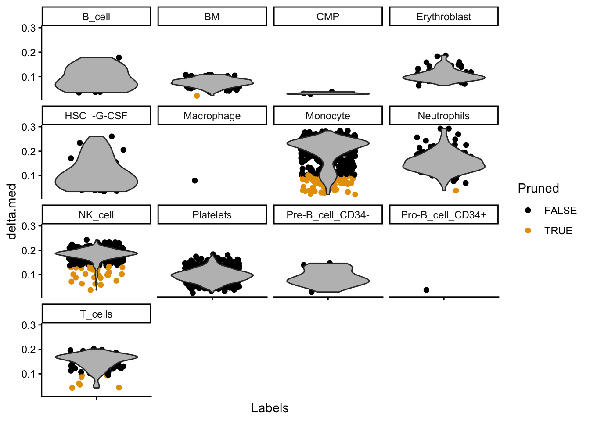
Ahora vamos a generar un heatmap (mapa de calor) que muestre las probabilidades o scores de clasificación que el modelo asignó a cada célula respecto a las posibles etiquetas.
plotScoreHeatmap(pred_main)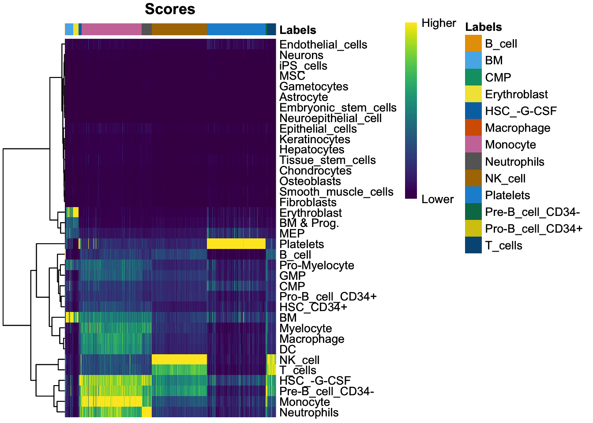
En lugar de trabajar únicamente con el marco de datos `singleR`, podemos añadir las etiquetas a nuestro objeto de datos Seurat como un campo de metadatos; así pues, añadamos las etiquetas de tipo celular a nuestro objeto Seurat.
#add main labels to object
pbmc_annotated[['immgen_singler_main']] = rep('NA', ncol(pbmc_annotated))
pbmc_annotated$immgen_singler_main[rownames(pred_main)] = pred_main$labels
#add fine labels to object
pbmc_annotated[['immgen_singler_fine']] = rep('NA', ncol(pbmc_annotated))
pbmc_annotated$immgen_singler_fine[rownames(pred_fine)] = pred_fine$labelsAl comparar las etiquetas obtenidas de las tres fuentes, se observan numerosas discrepancias interesantes. Resolverlas requiere una revisión manual. Sin embargo, se pueden apreciar muchas clasificaciones reveladoras. Por ejemplo, el pequeño grupo 17 se identifica repetidamente como células B plasmáticas. Esta subpoblación distintiva presenta marcadores como CD38 y CD59.
FeaturePlot(pbmc_annotated, "CD38") + scale_colour_gradientn(colours = rev(brewer.pal(n = 11, name = "Spectral")))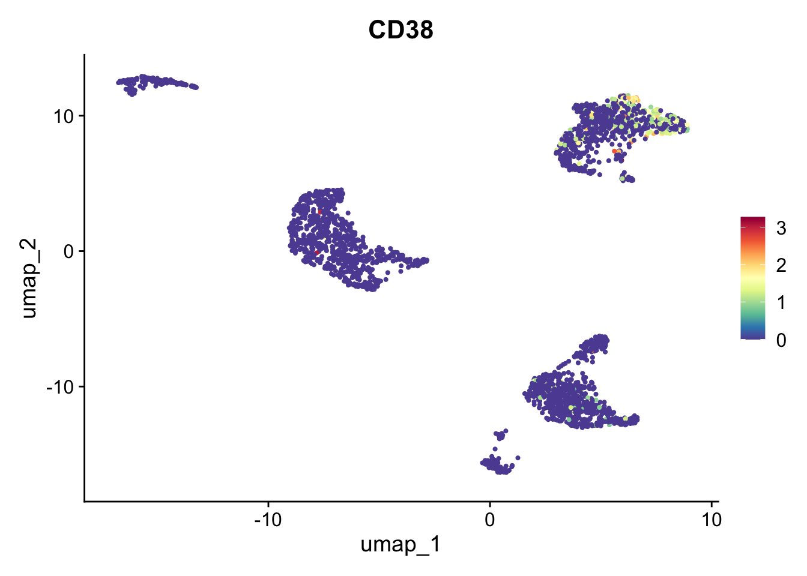
Del mismo modo, se ha identificado que el grupo 13 corresponde a las células MAIT. La bibliografía sugiere que las células MAIT sanguíneas se caracterizan por una elevada expresión de CD161 (KLRB1) y de quimiocinas como CXCR6. De hecho, esto parece ser así; sin embargo, este tipo de células es más difícil de evaluar.
FeaturePlot(pbmc_annotated, "KLRB1") + scale_colour_gradientn(colours = rev(brewer.pal(n = 11, name = "Spectral")))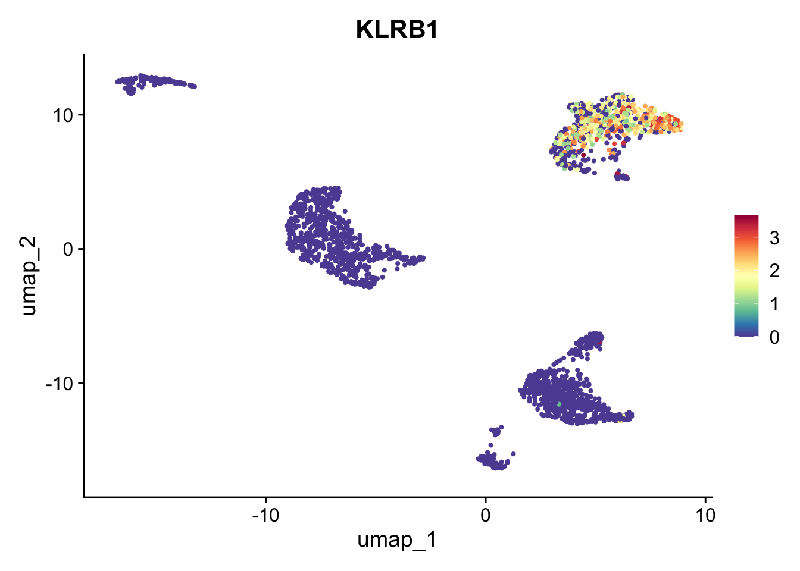
Paso 4. Guardar dataset
saveRDS(pbmc_annotated, file = "output/pbmc3k_singler_annotated.rds")Paso 5. Visualización de los datos
Vamos a ver las proporciones obtenidas de los tipos celulares y las muestras procesadas:
ggplot(pbmc_annotated[[]], aes(x = orig.ident, fill = immgen_singler_main)) +
geom_bar(position = "fill") +
scale_fill_viridis(discrete = TRUE)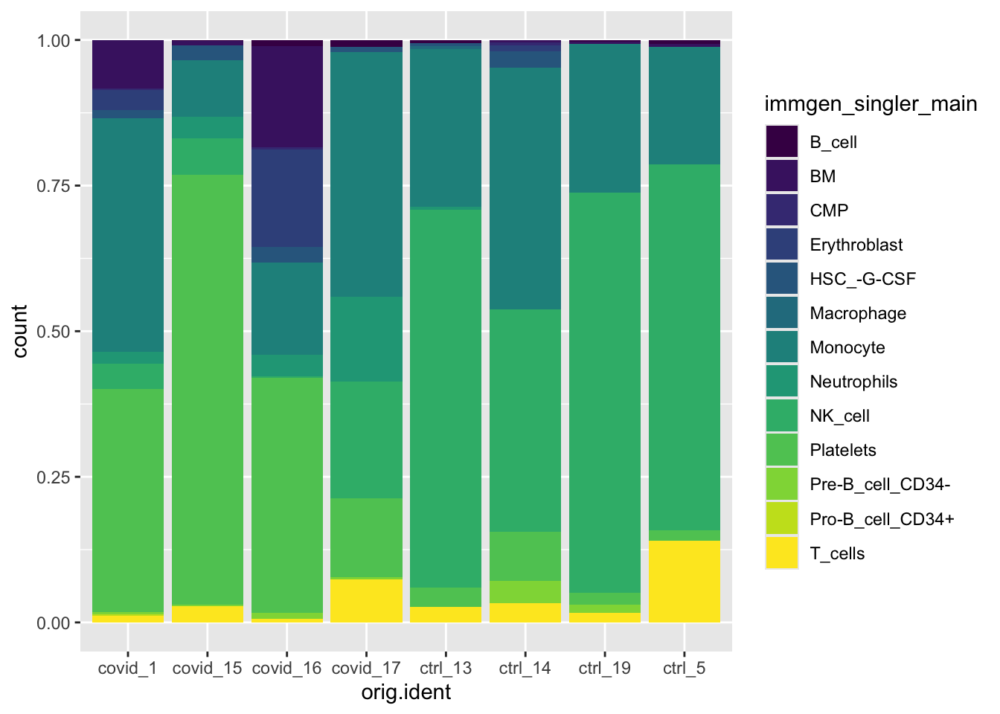
También podemos invertir las muestras y las etiquetas de las celdas y visualizar estos datos como se muestra a continuación.
ggplot(pbmc_annotated[[]], aes(x = immgen_singler_main, fill = orig.ident)) +
geom_bar(position = "fill") +
theme(axis.text.x = element_text(angle = 90, vjust = 0.5, hjust=1)) +
scale_fill_viridis(discrete = TRUE)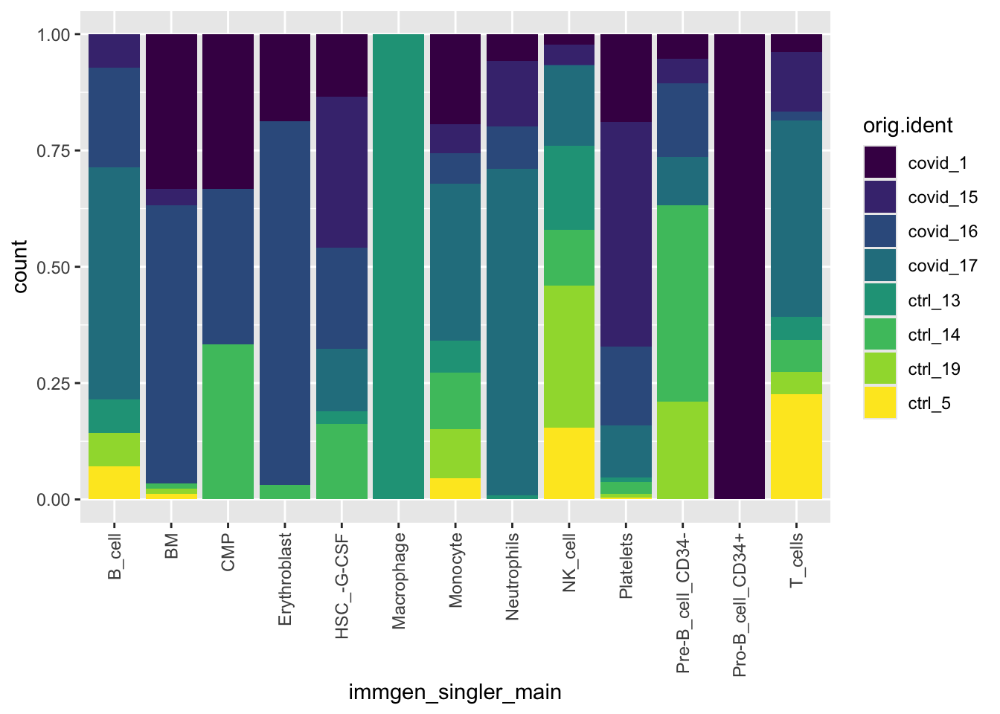
El siguiente código muestra la composición proporcional de muestras (orig.ident) dentro de cada tipo celular anotado (immgen_singler_fine).
ggplot(pbmc_annotated[[]], aes(x = immgen_singler_fine, fill = orig.ident)) +
geom_bar(position = "fill") +
theme(axis.text.x = element_text(angle = 90, vjust = 0.5, hjust=1)) +
scale_fill_viridis(discrete = TRUE) 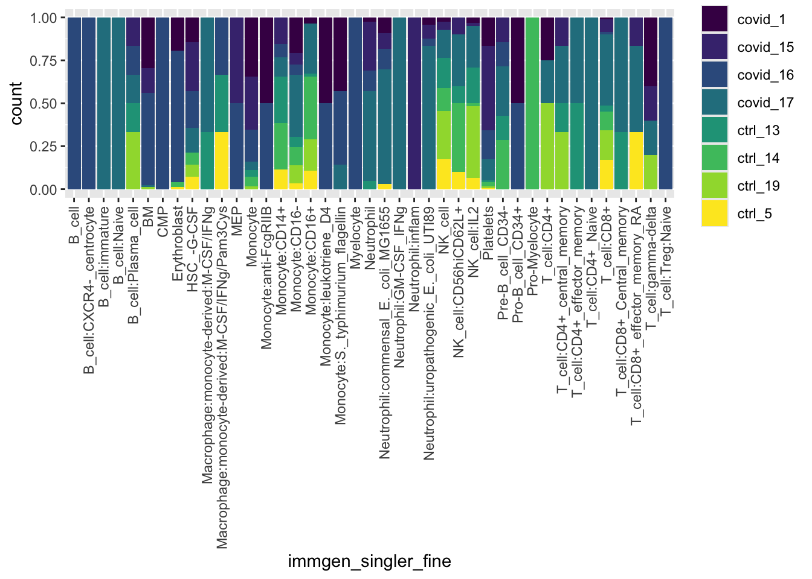
¿Cómo se corresponden nuestras anotaciones de tipos celulares con los grupos que definimos anteriormente?
wrap_plots(
# main
DimPlot(pbmc_annotated, group.by = c("immgen_singler_main")) +
# Eliminar axis
NoAxes(),
# fine
DimPlot(pbmc_annotated, group.by = c("immgen_singler_fine")) +
# Eliminar leyendas
NoLegend() +
# Eliminar axis
NoAxes(),
ncol = 2)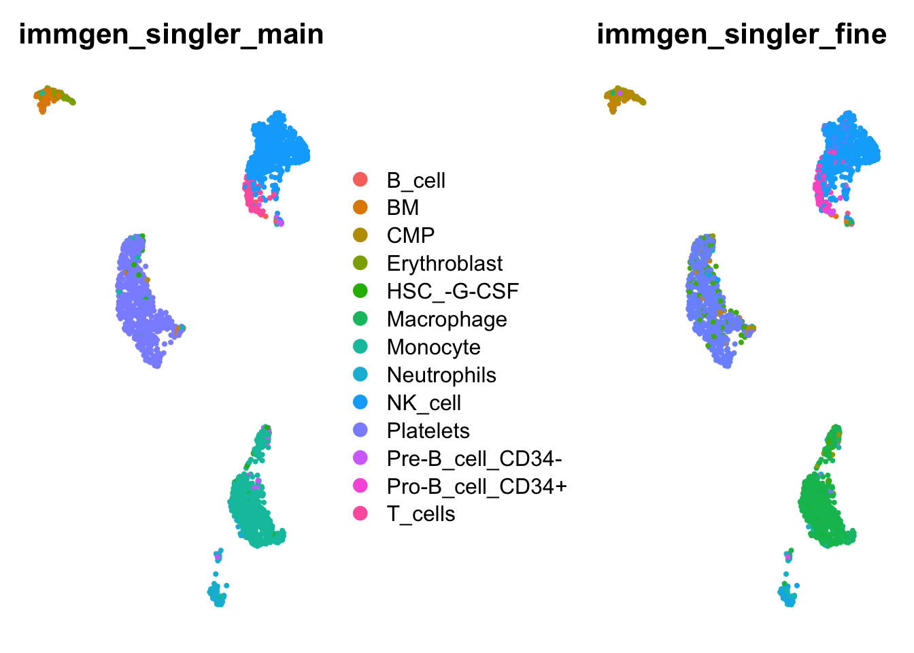
Si quieres separar y visualizar un tipo celular puedes
unique(pbmc_annotated$immgen_singler_main) [1] "Platelets" "CMP" "Monocyte" "BM"
[5] "Erythroblast" "Neutrophils" "NK_cell" "T_cells"
[9] "HSC_-G-CSF" "Pre-B_cell_CD34-" "Pro-B_cell_CD34+" "B_cell"
[13] "Macrophage" pbmc_annotated.celltype <- pbmc_annotated[, pbmc_annotated$immgen_singler_main == "Monocyte" ]
DimPlot(pbmc_annotated.celltype) +
# Eliminar leyendas
NoLegend() +
# Eliminar axis
NoAxes()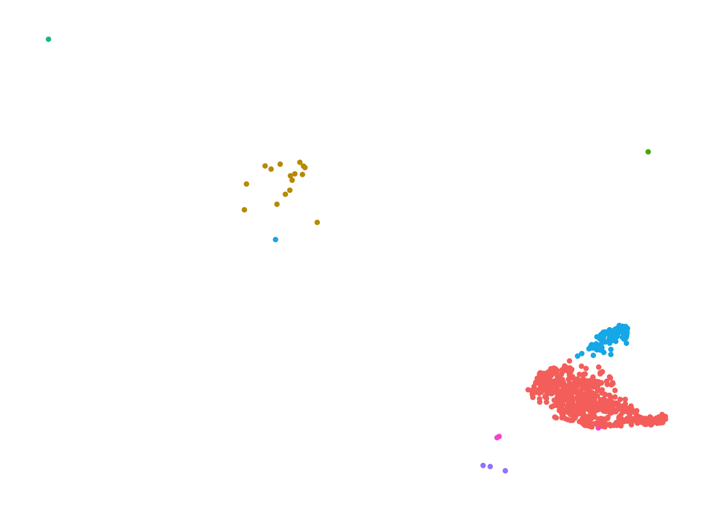
Paso 6. Control del Ciclo celular
- Listas de genes de ciclo celular
- Seurat incluye listas de genes asociados a fase S y G2/M (
cc.genes.updated.2019).
- Asignar fases con
CellCycleScoring
# Cargar listas de genes
s.genes <- cc.genes.updated.2019$s.genes
g2m.genes <- cc.genes.updated.2019$g2m.genes
# Asignar ciclo celular
pbmc_annotated <- CellCycleScoring(pbmc_annotated,
s.features = s.genes,
g2m.features = g2m.genes,
set.ident = TRUE)
table(pbmc_annotated$orig.ident)
covid_1 covid_15 covid_16 covid_17 ctrl_13 ctrl_14 ctrl_19 ctrl_5
349 462 298 581 185 212 297 164 Esto añade columnas en meta.data con la fase asignada (Phase) y scores de S y G2M.
- Visualizar resultados
Ahora también podemos crear un gráfico de violín para las puntuaciones del ciclo celular.
VlnPlot(pbmc_annotated, features = c("S.Score", "G2M.Score"), group.by = "orig.ident", ncol = 2, pt.size = .1)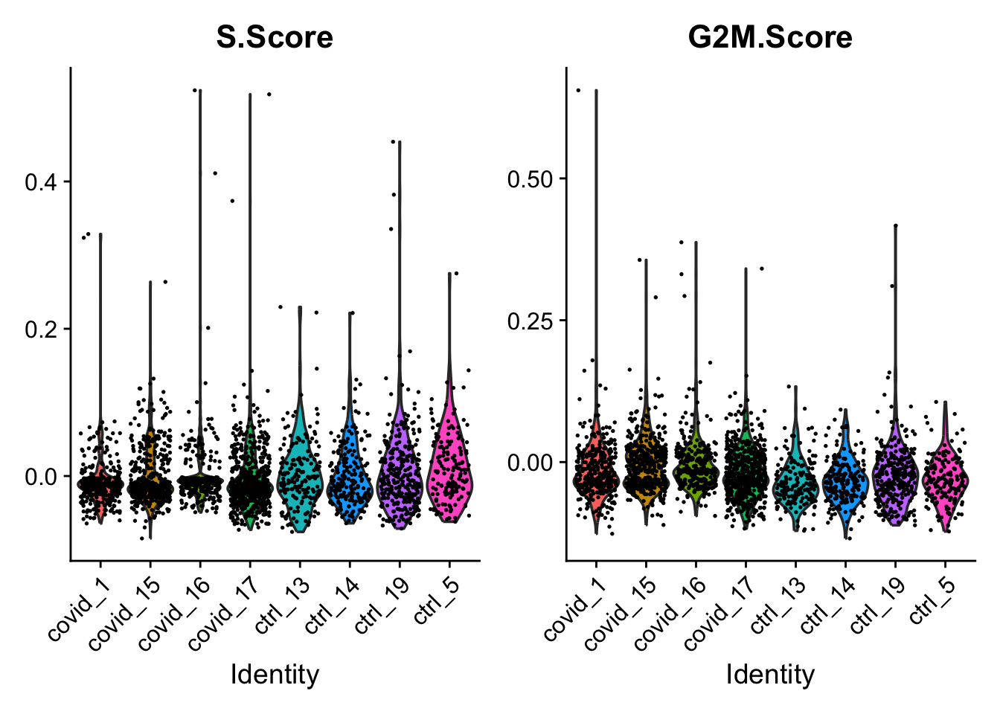
Por último, la puntuación del ciclo celular no parece depender en gran medida del tipo de célula; sin embargo, hay valores atípicos muy marcados en cada grupo.
FeaturePlot(pbmc_annotated, features = c("S.Score","G2M.Score"),label.size = 4,repel = T,label = T) &
theme(plot.title = element_text(size=10))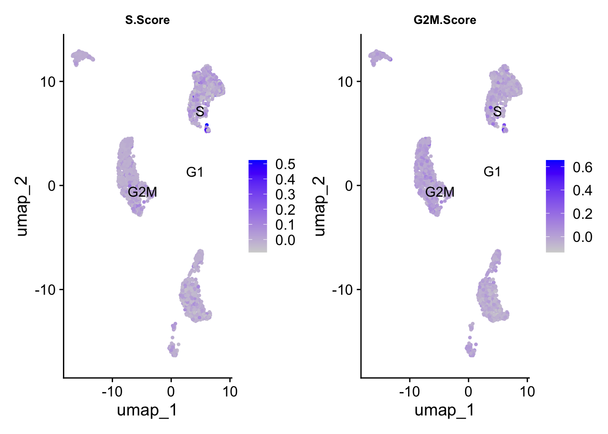
A continuación, podemos comprobar la fase celular en el UMAP. En este conjunto de datos, la fase no influye en la agrupación de clústeres, por lo que no requiere ningún tratamiento adicional.
DimPlot(pbmc_annotated, reduction = 'umap', group.by = "Phase")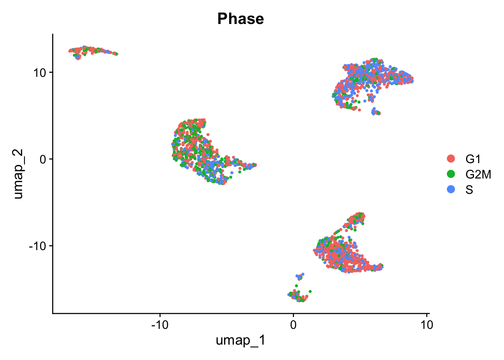
Cuando existe un sesgo, el procedimiento a seguir depende de la tarea en cuestión. Podría implicar «eliminar mediante regresión» la variación del ciclo celular al escalar los datos con ScaleData(kang, vars.to.regress="Phase") omitir los clústeres dominados por el ciclo celular o simplemente tenerlo en cuenta en los cálculos de expresión diferencial.
Si estás trabajando con datos no humanos, tendrás que convertir estas listas de genes o encontrar nuevos genes asociados al ciclo celular en tu especie.
En este caso, parece que solo tenemos unas pocas células en ciclo en estos conjuntos de datos.
Seurat realiza una predicción automática de la fase del ciclo celular con un umbral predeterminado de las puntuaciones en cero. Como puedes ver, esto no se ajusta muy bien a estos datos, así que ten cuidado al utilizar estas predicciones. En su lugar, te sugerimos que te fijes en las puntuaciones.
FeatureScatter(pbmc_annotated, "S.Score", "G2M.Score", group.by = "Phase")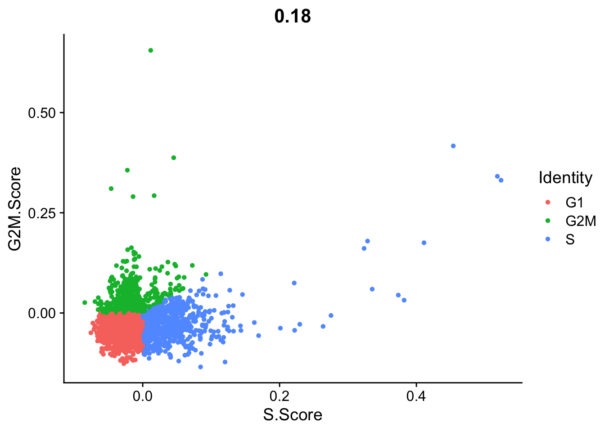
- Decidir si corregir
- Si el ciclo celular domina la variabilidad, se puede regredir en
ScaleData:
seurat_obj <- ScaleData(pbmc_annotated, vars.to.regress = c("S.Score", "G2M.Score"))Regressing out S.Score, G2M.ScoreCentering and scaling data matrixseurat_objAn object of class Seurat
33538 features across 2548 samples within 1 assay
Active assay: RNA (33538 features, 2000 variable features)
3 layers present: data, counts, scale.data
3 dimensional reductions calculated: pca, umap, harmony- Si es relevante biológicamente (ej. proliferación en tumores), se mantiene como variable de interés.
Paso 7. Expresión diferencial entre condiciones (type)
- Cambio de identidad
Estás definiendo que la identidad de las células (lo que Seurat usa para agrupar) sea la columna "type" del meta.data. Esto es importante porque FindAllMarkers usará esa identidad para comparar grupos.
sub_cell_selection <- alldata
sub_cell_selection <- SetIdent(sub_cell_selection, value = "type")- Análisis de Expresión diferencial (ctrl vs covid)
# Compute differentiall expression
DGE_cell_selection <- FindAllMarkers(sub_cell_selection,
log2FC.threshold = 0.2,
test.use = "wilcox",
min.pct = 0.1,
min.diff.pct = 0.2,
only.pos = TRUE,
max.cells.per.ident = 50,
assay = "RNA"
)Calculating cluster CovidCalculating cluster Ctrlhead(DGE_cell_selection) p_val avg_log2FC pct.1 pct.2 p_val_adj cluster gene
PF4 6.186534e-09 3.8520431 0.562 0.099 0.000207484 Covid PF4
CMTM5 3.854178e-07 3.6957634 0.389 0.047 0.012926141 Covid CMTM5
IGKC 4.828351e-07 0.5369594 0.430 0.049 0.016193322 Covid IGKC
CAVIN2 7.094952e-07 2.7348107 0.457 0.092 0.023795051 Covid CAVIN2
IFITM3 1.369915e-06 2.5344389 0.591 0.341 0.045944219 Covid IFITM3
CLEC1B 1.511224e-06 4.4492596 0.319 0.023 0.050683429 Covid CLEC1B- Análisis de Expresión diferencial (células del Cluster 3)
Si quiero ver la DEG en un solo cluster, por ejemplo en el Cluster 3:
# Supongamos que tu identidad actual es "seurat_clusters"
sub_cell_selection <- alldata
Idents(sub_cell_selection) <- "seurat_clusters"
# Comparar el cluster 3 contra todos los demás
DEG_cluster3 <- FindMarkers(sub_cell_selection,
ident.1 = 3,
log2FC.threshold = 0.25,
test.use = "wilcox",
min.pct = 0.1,
min.diff.pct = 0.2,
only.pos = TRUE
)
head(DEG_cluster3) p_val avg_log2FC pct.1 pct.2 p_val_adj
TSC22D1 1.019876e-258 4.453454 0.917 0.131 3.420459e-254
HIST1H2BJ 3.876329e-242 4.257492 0.795 0.078 1.300043e-237
HIST1H3H 9.560991e-229 4.171782 0.835 0.112 3.206565e-224
ACRBP 2.537169e-217 3.583375 0.887 0.152 8.509159e-213
PTCRA 6.935459e-201 3.667611 0.786 0.109 2.326014e-196
HIST1H2AC 3.576061e-196 3.458317 0.963 0.268 1.199339e-191Paso 8. Visualización de Expresión diferencial entre condiciones (type)
Ahora podemos representar gráficamente la expresión en todo el tipo.
top5_cell_selection <- DGE_cell_selection %>%
group_by(cluster) %>%
top_n(-5, p_val)
VlnPlot(sub_cell_selection, features = as.character(unique(top5_cell_selection$gene)), ncol = 5, group.by = "type", assay = "RNA", pt.size = .1)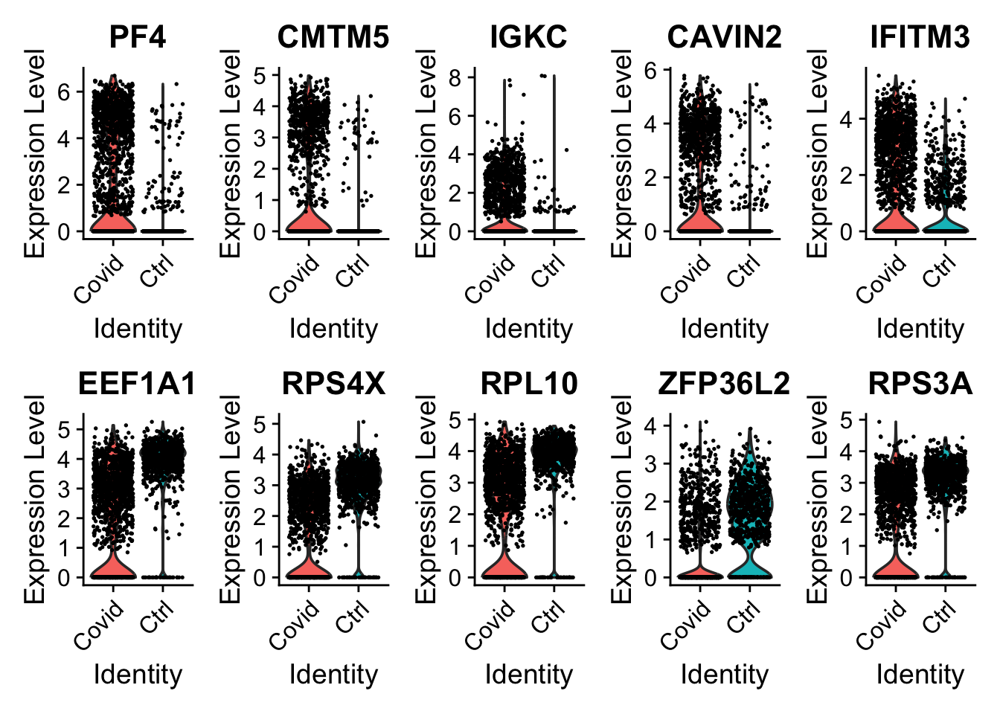
También podemos representar gráficamente estos genes en todos los clústeres, pero desglosados por tipo, para comprobar si los genes también se sobreexpresan o se subexpresan en otros tipos celulares.
VlnPlot(alldata,
features = as.character(unique(top5_cell_selection$gene)),
ncol = 4, split.by = "type", assay = "RNA", pt.size = 0
)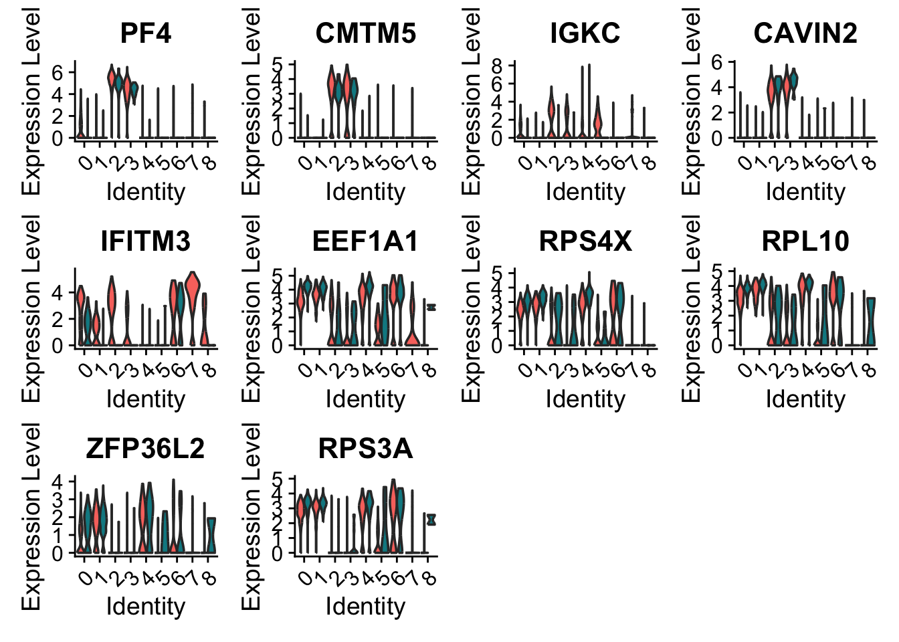
Como puedes ver, entre los genes con mayor expresión diferencial (DE) hay muchos relacionados con los cromosomas sexuales. Y, como recordarás del laboratorio de control de calidad, la distribución por sexos entre nuestros sujetos es desequilibrada, por lo que es posible que esto no tenga nada que ver con la COVID.
Paso 9. Pseudobulk con matriz generada
cell_selection <- SetIdent(pbmc_annotated, value = "orig.ident")
table(cell_selection$orig.ident)
covid_1 covid_15 covid_16 covid_17 ctrl_13 ctrl_14 ctrl_19 ctrl_5
349 462 298 581 185 212 297 164 # get the count matrix for all cells
DGE_DATA <- GetAssayData(cell_selection, assay = "RNA", layer = "counts")
# Compute pseudobulk
mm <- Matrix::sparse.model.matrix(~ 0 + cell_selection$orig.ident)
pseudobulk <- DGE_DATA %*% mm# define the groups
bulk.labels <- c("Covid", "Covid", "Covid", "Covid", "Ctrl", "Ctrl", "Ctrl","Ctrl")
dge.list <- DGEList(counts = pseudobulk, group = factor(bulk.labels))
keep <- filterByExpr(dge.list)
dge.list <- dge.list[keep, , keep.lib.sizes = FALSE]
dge.list <- calcNormFactors(dge.list)
design <- model.matrix(~bulk.labels)
dge.list <- estimateDisp(dge.list, design)
fit <- glmQLFit(dge.list, design)
qlf <- glmQLFTest(fit, coef = 2)
topTags(qlf)Coefficient: bulk.labelsCtrl
logFC logCPM F PValue FDR
CDKN1A -2.673606 6.169782 90.64176 1.934901e-06 0.007689743
S100A12 -3.280002 10.406002 84.90719 2.573520e-06 0.007689743
BASP1 -2.804305 6.392202 75.85988 4.409343e-06 0.007689743
ASPH -2.813244 5.188133 73.27048 5.373808e-06 0.007689743
S100A8 -3.687406 14.320728 69.44833 6.506808e-06 0.007689743
SOD2 -2.493123 8.777729 67.51204 7.404662e-06 0.007689743
IGLC3 -6.597721 5.753170 47.69971 7.874225e-06 0.007689743
DSE -2.716279 5.603589 64.91069 9.162255e-06 0.007829147
PLBD1 -2.873686 8.054313 61.48260 1.131561e-05 0.008095002
MCEMP1 -3.431476 6.055396 60.77150 1.234736e-05 0.008095002Como se puede ver, tenemos muy pocos genes significativos. Dado que solo contamos con 4 muestras contra 4, no es de esperar que encontremos muchos genes con este método.
De nuevo, en forma de gráfico de puntos con los 10 genes principales:
res.edgeR <- topTags(qlf, 100)$table
res.edgeR$dir <- ifelse(res.edgeR$logFC > 0, "Covid", "Ctrl")
res.edgeR$gene <- rownames(res.edgeR)
top.edgeR <- res.edgeR %>%
group_by(dir) %>%
top_n(-10, PValue) %>%
arrange(dir)
DotPlot(cell_selection,
features = as.character(unique(top.edgeR$gene)), group.by = "orig.ident",
assay = "RNA"
) + coord_flip() + ggtitle("EdgeR pseudobulk") + RotatedAxis()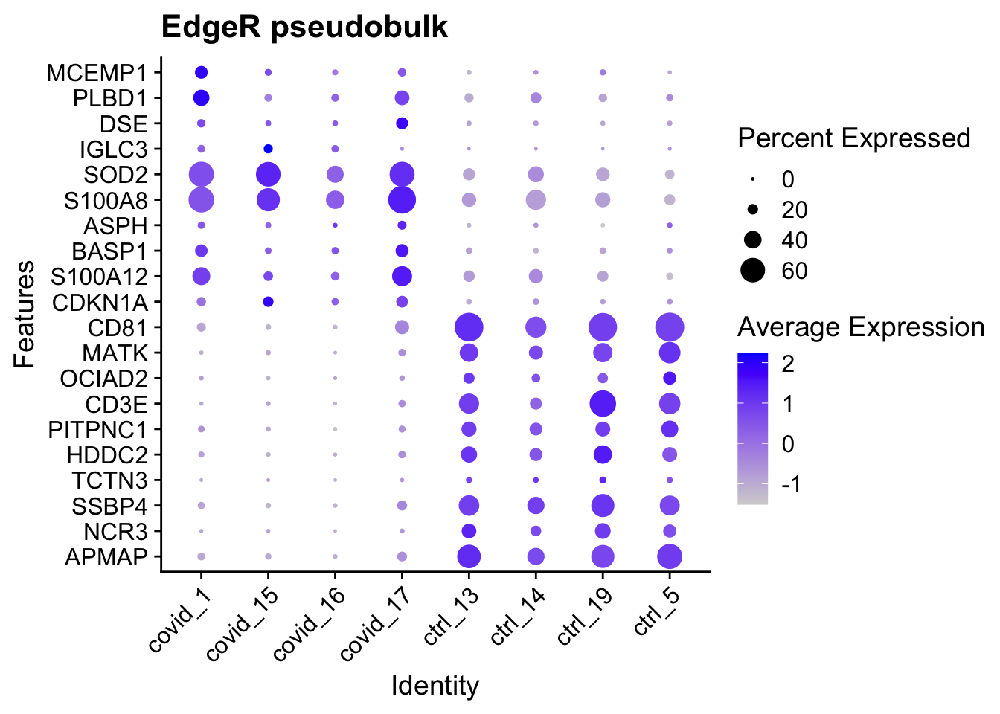
Paso 10. Pseudobulk con seurat
Como se puede ver, aunque encontremos pocos genes, parecen tener sentido en todos los pacientes.
# Pseudobulking con Seurat
pseudo_data <- AggregateExpression(cell_selection, assays = 'RNA',
return.seurat = T, group.by = c('type', 'immgen_singler_main'))Names of identity class contain underscores ('_'), replacing with dashes ('-')
Centering and scaling data matrix
This message is displayed once every 8 hours.tail(Cells(pseudo_data))[1] "Ctrl_Monocyte" "Ctrl_Neutrophils" "Ctrl_NK-cell"
[4] "Ctrl_Platelets" "Ctrl_Pre-B-cell-CD34-" "Ctrl_T-cells" pseudo_data$celltype.type <- paste(pseudo_data$immgen_singler_main, pseudo_data$type, sep = "_")
pseudo_data$celltype.type Covid_B-cell Covid_BM Covid_CMP
"B-cell_Covid" "BM_Covid" "CMP_Covid"
Covid_Erythroblast Covid_HSC--G-CSF Covid_Monocyte
"Erythroblast_Covid" "HSC--G-CSF_Covid" "Monocyte_Covid"
Covid_Neutrophils Covid_NK-cell Covid_Platelets
"Neutrophils_Covid" "NK-cell_Covid" "Platelets_Covid"
Covid_Pre-B-cell-CD34- Covid_Pro-B-cell-CD34+ Covid_T-cells
"Pre-B-cell-CD34-_Covid" "Pro-B-cell-CD34+_Covid" "T-cells_Covid"
Ctrl_B-cell Ctrl_BM Ctrl_CMP
"B-cell_Ctrl" "BM_Ctrl" "CMP_Ctrl"
Ctrl_Erythroblast Ctrl_HSC--G-CSF Ctrl_Macrophage
"Erythroblast_Ctrl" "HSC--G-CSF_Ctrl" "Macrophage_Ctrl"
Ctrl_Monocyte Ctrl_Neutrophils Ctrl_NK-cell
"Monocyte_Ctrl" "Neutrophils_Ctrl" "NK-cell_Ctrl"
Ctrl_Platelets Ctrl_Pre-B-cell-CD34- Ctrl_T-cells
"Platelets_Ctrl" "Pre-B-cell-CD34-_Ctrl" "T-cells_Ctrl" A continuación, realizamos un análisis de expresión diferencial a nivel de pseudogrupo para los monocitos CD14 y lo comparamos con los resultados anteriores del análisis de expresión diferencial a nivel de célula individual.
# Este codigo me falla y es por la cantidad tan pequeña de celulas
Idents(pseudo_data) <- "celltype.type"
bulk.mono.de <- FindMarkers(object = pseudo_data,
ident.1 = "NK-cell_Ctrl",
ident.2 = "NK-cell_Covid",
test.use = "DESeq2")
head(bulk.mono.de, n = 15)Paso 9. Guardar dataset
save(dge.list, res.edgeR, cell_selection, file = "output/variables_expression.RData")Referencias
- Información del dataset de GEO GSE149689
- Más explicación de este dataset GSE149689
- SingleR + celldex + Seurat
- SingleR
- Differential gene expression
- Pseudobulk
- NBS - Celltype prediction
- Cell cycle Assignment
- Sanger - Cell type annotation using SingleR
- Differential Expression
- Análisis de expresión diferencial
- Introducción a Seurat
- Trajectory inference using Slingshot